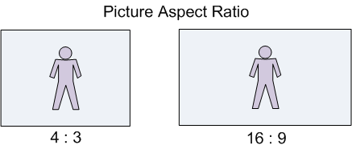
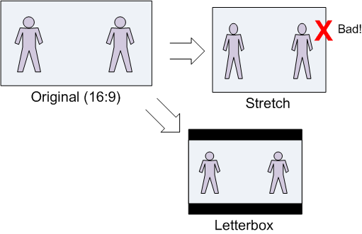
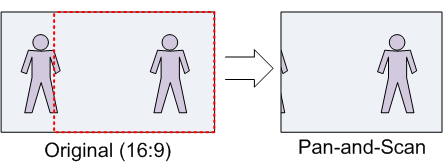

This topic describes two related concepts, picture aspect ratio and pixel aspect ratio. It then describes how these concepts are expressed in Microsoft Media Foundation using media types.
Picture aspect ratio defines the shape of the displayed video image. Picture aspect ratio is notated X:Y, where X:Y is the ratio of picture width to picture height. Most video standards use either 4:3 or 16:9 picture aspect ratio. The 16:9 aspect ratio is commonly called widescreen. Cinema film often uses a 1:85:1 or 1:66:1 aspect ratio. Picture aspect ratio is also called display aspect ratio (DAR).

Sometimes the video image does not have the same shape as the display area. For example, a 4:3 video might be shown on a widescreen (16×9) television. In computer video, the video might be shown inside a window that has an arbitrary size. In that case, there are three ways the image can be made to fit within the display area:
Stretching the image to fit the display area is almost always wrong, because it does not preserve the correct picture aspect ratio.
The process of scaling a widescreen image to fit a 4:3 display is called letterboxing, shown in the next diagram. The resulting rectangular areas at the top and bottom of the image are typically filled with black, although other colors can be used.

The reverse case, scaling a 4:3 image to fit a widescreen display, is sometimes called pillarboxing. However, the term letterbox is also used in a general sense, to mean scaling a video image to fit any given display area.
Pan-and-scan is a technique whereby a widescreen image is cropped to a 4×3 rectangular area, for display on a 4:3 display device. The resulting image fills the entire display, without requiring black letterbox areas, but portions of the original image are cropped out of the picture. The area that is cropped can move from frame to frame, as the area of interest shifts. The term "pan" in pan-and-scan refers to the panning effect that is caused by moving the pan-and-scan area.

Pixel aspect ratio (PAR) measures the shape of a pixel.
When a digital image is captured, the image is sampled both vertically and horizontally, resulting in a rectangular array of quantized samples, called pixels or pels. The shape of the sampling grid determines the shape of the pixels in the digitized image.
Here is an example that uses small numbers to keep the math simple. Suppose that the original image is square (that is, the picture aspect ratio is 1:1); and suppose the sampling grid contains 12 elements, arranged in a 4×3 grid. The shape of each resulting pixel will be taller than it is wide. Specifically, the shape of each pixel will be 3×4. Pixels that are not square are called non-square pixels.

Pixel aspect ratio also applies to the display device. The physical shape of the display device and the physical pixel resolution (across and down) determine the PAR of the display device. Computer monitors generally use square pixels. If the image PAR and the display PAR do not match, the image must be scaled in one dimension, either vertically or horizontally, in order to display correctly. The following formula relates PAR, display aspect ratio (DAR), and image size in pixels:
DAR = (image width in pixels / image height in pixels) × PAR
Note that image width and image height in this formula refer to the image in memory, not the displayed image.
Here is a real-world example: NTSC-M analog video contains 480 scan lines in the active image area. ITU-R Rec. BT.601 specifies a horizontal sampling rate of 704 visible pixels per line, yielding a digital image with 704 x 480 pixels. The intended picture aspect ratio is 4:3, yielding a PAR of 10:11.
4/3 = (704/480) x (10/11)
To display this image correctly on a display device with square pixels, you must scale either the width by 10/11 or the height by 11/10.
The correct shape of a video frame is defined by the pixel aspect ratio (PAR) and the display area.
If pan-and-can mode is FALSE and no display aperture is defined, the entire video frame should be displayed. In fact, this is the case for most video content other than television and DVD video. The aspect ratio of the entire picture is calculated as (display area width / display area height) × PAR.
The following code shows how to get the display area from the media type.
MFVideoArea MakeArea(float x, float y, DWORD width, DWORD height);
HRESULT GetVideoDisplayArea(IMFMediaType *pType, MFVideoArea *pArea)
{
HRESULT hr = S_OK;
BOOL bPanScan = FALSE;
UINT32 width = 0, height = 0;
bPanScan = MFGetAttributeUINT32(pType, MF_MT_PAN_SCAN_ENABLED, FALSE);
// In pan-and-scan mode, try to get the pan-and-scan region.
if (bPanScan)
{
hr = pType->GetBlob(MF_MT_PAN_SCAN_APERTURE, (UINT8*)pArea,
sizeof(MFVideoArea), NULL);
}
// If not in pan-and-scan mode, or the pan-and-scan region is not set,
// get the minimimum display aperture.
if (!bPanScan || hr == MF_E_ATTRIBUTENOTFOUND)
{
hr = pType->GetBlob(MF_MT_MINIMUM_DISPLAY_APERTURE, (UINT8*)pArea,
sizeof(MFVideoArea), NULL);
if (hr == MF_E_ATTRIBUTENOTFOUND)
{
// Minimum display aperture is not set.
// For backward compatibility with some components,
// check for a geometric aperture.
hr = pType->GetBlob(MF_MT_GEOMETRIC_APERTURE, (UINT8*)pArea,
sizeof(MFVideoArea), NULL);
}
// Default: Use the entire video area.
if (hr == MF_E_ATTRIBUTENOTFOUND)
{
hr = MFGetAttributeSize(pType, MF_MT_FRAME_SIZE, &width, &height);
if (SUCCEEDED(hr))
{
*pArea = MakeArea(0.0, 0.0, width, height);
}
}
}
return hr;
}
MFOffset MakeOffset(float v)
{
MFOffset offset;
offset.value = short(v);
offset.fract = WORD(65536 * (v-offset.value));
return offset;
}
MFVideoArea MakeArea(float x, float y, DWORD width, DWORD height)
{
MFVideoArea area;
area.OffsetX = MakeOffset(x);
area.OffsetY = MakeOffset(y);
area.Area.cx = width;
area.Area.cy = height;
return area;
}
The following code shows how to convert a rectangle from one pixel aspect ratio (PAR) to another, while preserving the picture aspect ratio.
//-----------------------------------------------------------------------------
// Converts a rectangle from one pixel aspect ratio (PAR) to another PAR.
// Returns the corrected rectangle.
//
// For example, a 720 x 486 rect with a PAR of 9:10, when converted to 1x1 PAR,
// must be stretched to 720 x 540.
//-----------------------------------------------------------------------------
RECT CorrectAspectRatio(const RECT& src, const MFRatio& srcPAR, const MFRatio& destPAR)
{
// Start with a rectangle the same size as src, but offset to (0,0).
RECT rc = {0, 0, src.right - src.left, src.bottom - src.top};
// If the source and destination have the same PAR, there is nothing to do.
// Otherwise, adjust the image size, in two steps:
// 1. Transform from source PAR to 1:1
// 2. Transform from 1:1 to destination PAR.
if ((srcPAR.Numerator != destPAR.Numerator) ||
(srcPAR.Denominator != destPAR.Denominator))
{
// Correct for the source's PAR.
if (srcPAR.Numerator > srcPAR.Denominator)
{
// The source has "wide" pixels, so stretch the width.
rc.right = MulDiv(rc.right, srcPAR.Numerator, srcPAR.Denominator);
}
else if (srcPAR.Numerator < srcPAR.Denominator)
{
// The source has "tall" pixels, so stretch the height.
rc.bottom = MulDiv(rc.bottom, srcPAR.Denominator, srcPAR.Numerator);
}
// else: PAR is 1:1, which is a no-op.
// Next, correct for the target's PAR. This is the inverse operation of
// the previous.
if (destPAR.Numerator > destPAR.Denominator)
{
// The destination has "wide" pixels, so stretch the height.
rc.bottom = MulDiv(rc.bottom, destPAR.Numerator, destPAR.Denominator);
}
else if (destPAR.Numerator < destPAR.Denominator)
{
// The destination has "tall" pixels, so stretch the width.
rc.right = MulDiv(rc.right, destPAR.Denominator, destPAR.Numerator);
}
// else: PAR is 1:1, which is a no-op.
}
return rc;
}
The following code calculates the letterbox area, given a source and destination rectangle. It is assumed that both rectangles have the same PAR.
RECT LetterBoxRect(const RECT& rcSrc, const RECT& rcDst)
{
// Compute source/destination ratios.
int iSrcWidth = rcSrc.right - rcSrc.left;
int iSrcHeight = rcSrc.bottom - rcSrc.top;
int iDstWidth = rcDst.right - rcDst.left;
int iDstHeight = rcDst.bottom - rcDst.top;
int iDstLBWidth;
int iDstLBHeight;
if (MulDiv(iSrcWidth, iDstHeight, iSrcHeight) <= iDstWidth)
{
// Column letterboxing ("pillar box")
iDstLBWidth = MulDiv(iDstHeight, iSrcWidth, iSrcHeight);
iDstLBHeight = iDstHeight;
}
else
{
// Row letterboxing.
iDstLBWidth = iDstWidth;
iDstLBHeight = MulDiv(iDstWidth, iSrcHeight, iSrcWidth);
}
// Create a centered rectangle within the current destination rect
LONG left = rcDst.left + ((iDstWidth - iDstLBWidth) / 2);
LONG top = rcDst.top + ((iDstHeight - iDstLBHeight) / 2);
RECT rc;
SetRect(&rc, left, top, left + iDstLBWidth, top + iDstLBHeight);
return rc;
}
MF_MT_MINIMUM_DISPLAY_APERTURE
Â
Â